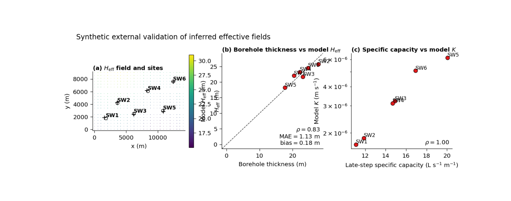

Note
Go to the end to download the full example code.
External validation: comparing inferred effective fields against independent site evidence#
This example teaches you how to read the GeoPrior external-validation figure.
Many figures in a modeling workflow evaluate internal consistency:
forecast accuracy,
residual behavior,
physics agreement,
sensitivity to hyperparameters.
This figure asks a different question:
Do the inferred effective fields agree with independent site-level evidence that was not created by the plotting routine itself?
That is why this figure is important. It moves from model-internal diagnostics to field-facing validation.
What the figure shows#
The real plotting backend builds three panels:
a map of the inferred \(H_{\mathrm{eff}}\) field with site locations and matched pixels,
a scatter plot of borehole-derived compressible thickness versus model \(H_{\mathrm{eff}}\),
a scatter plot of late-step specific capacity versus model \(K\).
So the page combines:
spatial context,
a thickness comparison,
and a hydraulic-conductivity comparison.
Why this matters#
A model can look convincing on its own training and test splits, but external validation is where physical credibility becomes more persuasive.
This figure helps the reader ask:
Are the matched model pixels reasonable in space?
Does inferred \(H_{\mathrm{eff}}\) track observed compressible thickness?
Does inferred \(K\) rise where field productivity is higher?
Are the site-to-pixel match distances acceptable?
The real script is written for the Zhongshan external-validation workflow, but the teaching logic is general. This gallery page creates a compact synthetic full-city payload and a small site table so the example is fully executable during the docs build.
Imports#
We import the real plotting backend from the existing script. The gallery page therefore teaches the actual figure generator, not a separate imitation.
from __future__ import annotations
import tempfile
from pathlib import Path
import matplotlib.image as mpimg
import matplotlib.pyplot as plt
import numpy as np
import pandas as pd
from geoprior._scripts.plot_external_validation import (
plot_external_validation,
)
Step 1 - Build a compact synthetic full-city payload#
The real script expects two NPZ files:
full_inputs.npzcontaining at leastcoordsandH_field,physics_payload_fullcity.npzcontaining at leastKandHd.
The helper build_pixel_table(...) reads these files,
reduces the horizon dimension, extracts x/y from the first
time slice, and then aggregates repeated pixels into one table.
To keep the lesson self-contained, we synthesize these files directly.
nx = 28
ny = 20
horizon = 3
xv = np.linspace(0.0, 14_000.0, nx)
yv = np.linspace(0.0, 9_000.0, ny)
X, Y = np.meshgrid(xv, yv)
x_flat = X.ravel()
y_flat = Y.ravel()
n_seq = x_flat.size
xn = (X - X.min()) / (X.max() - X.min())
yn = (Y - Y.min()) / (Y.max() - Y.min())
# Effective thickness field [m]
H_eff = (
18.0
+ 10.0 * yn
+ 3.0 * np.sin(2.0 * np.pi * xn)
)
# Effective conductivity field [m/s]
K_field = 10.0 ** (
-5.8 + 0.9 * xn - 0.35 * yn
)
# Keep Hd close to H_eff for this synthetic lesson.
Hd_field = H_eff * 0.92
Step 2 - Package arrays in the same structural shape the
real script expects
——————————————————–
coords is read with shape (N, H, 3), and the plotting
helper uses the first time slice plus columns 1 and 2 for
x and y.
So we store: - t in channel 0, - x in channel 1, - y in channel 2.
coords = np.zeros((n_seq, horizon, 3), dtype=float)
for h in range(horizon):
coords[:, h, 0] = 2022 + h
coords[:, h, 1] = x_flat
coords[:, h, 2] = y_flat
# Repeat H_field, K, and Hd across horizon so all reducers
# (first / mean / median) remain valid.
H_field = np.repeat(
H_eff.ravel()[:, None],
horizon,
axis=1,
)
K_vals = np.repeat(
K_field.ravel()[:, None],
horizon,
axis=1,
)
Hd_vals = np.repeat(
Hd_field.ravel()[:, None],
horizon,
axis=1,
)
Step 3 - Create a compact site table#
The real script requires a site-level validation table with the following columns:
well_id
x, y
matched_pixel_x, matched_pixel_y
model_H_eff_m
model_K_mps
approx_compressible_thickness_m
step3_specific_capacity_Lps_per_m
match_distance_m
We create six synthetic sites. Their observed thickness values and specific capacities are correlated with the matched model values, but not identical. That makes the lesson realistic: external validation should show agreement with noise, not perfect identity.
site_points = [
("SW1", 1800.0, 1800.0),
("SW2", 3600.0, 4200.0),
("SW3", 6200.0, 2500.0),
("SW4", 8400.0, 6100.0),
("SW5", 10800.0, 3000.0),
("SW6", 12400.0, 7600.0),
]
def nearest_pixel(px: float, py: float) -> int:
d2 = (x_flat - px) ** 2 + (y_flat - py) ** 2
return int(np.argmin(d2))
rng = np.random.default_rng(123)
rows: list[dict[str, float | str]] = []
for wid, sx, sy in site_points:
idx = nearest_pixel(sx, sy)
mx = float(x_flat[idx])
my = float(y_flat[idx])
model_h = float(H_eff.ravel()[idx])
model_k = float(K_field.ravel()[idx])
obs_thickness = model_h + rng.normal(0.0, 1.6)
# Build a positively associated site productivity proxy.
# The absolute unit values are synthetic but plausible enough
# for the teaching purpose.
spec_capacity = (
8.0
+ 2.0e6 * model_k
+ rng.normal(0.0, 0.8)
)
spec_capacity = max(0.2, float(spec_capacity))
match_distance = float(
np.sqrt((sx - mx) ** 2 + (sy - my) ** 2)
)
rows.append(
{
"well_id": wid,
"x": float(sx),
"y": float(sy),
"matched_pixel_x": mx,
"matched_pixel_y": my,
"model_H_eff_m": model_h,
"model_K_mps": model_k,
"approx_compressible_thickness_m": float(obs_thickness),
"step3_specific_capacity_Lps_per_m": spec_capacity,
"match_distance_m": match_distance,
}
)
site_df = pd.DataFrame(rows)
print(site_df.to_string(index=False))
well_id x y matched_pixel_x matched_pixel_y model_H_eff_m model_K_mps approx_compressible_thickness_m step3_specific_capacity_Lps_per_m match_distance_m
SW1 1800.0 1800.0 1555.555556 1894.736842 22.033626 0.000002 20.451032 11.073567 262.160553
SW2 3600.0 4200.0 3629.629630 4263.157895 25.731767 0.000002 27.792447 11.858351 69.762702
SW3 6200.0 2500.0 6222.222222 2368.421053 21.657639 0.000003 23.130009 14.902259 133.442297
SW4 8400.0 6100.0 8296.296296 6157.894737 23.193578 0.000003 22.175236 14.669325 118.769772
SW5 10800.0 3000.0 10888.888889 2842.105263 18.203471 0.000006 17.696919 20.059053 181.195978
SW6 12400.0 7600.0 12444.444444 7578.947368 24.492690 0.000005 24.648158 16.925216 49.178470
Step 4 - Save the synthetic input files#
The real plotting function consumes files, not only in-memory arrays, so we write them to a temporary folder exactly as a user workflow would.
tmp_dir = Path(
tempfile.mkdtemp(prefix="gp_sg_extval_")
)
site_csv = tmp_dir / "site_validation.csv"
full_inputs_npz = tmp_dir / "full_inputs.npz"
full_payload_npz = tmp_dir / "physics_payload_fullcity.npz"
site_df.to_csv(site_csv, index=False)
np.savez(
full_inputs_npz,
coords=coords,
H_field=H_field,
)
np.savez(
full_payload_npz,
K=K_vals,
Hd=Hd_vals,
)
print("")
print("Written inputs:")
print(f" {site_csv}")
print(f" {full_inputs_npz}")
print(f" {full_payload_npz}")
Written inputs:
C:\Users\Daniel\AppData\Local\Temp\gp_sg_extval_lh4pt9x4\site_validation.csv
C:\Users\Daniel\AppData\Local\Temp\gp_sg_extval_lh4pt9x4\full_inputs.npz
C:\Users\Daniel\AppData\Local\Temp\gp_sg_extval_lh4pt9x4\physics_payload_fullcity.npz
Step 5 - Render the real external-validation figure#
The plotting backend will:
build a gridded H_eff map from the full-city arrays,
draw the site points and matched pixels,
compare observed borehole thickness vs model H_eff,
compare specific capacity vs model K,
and optionally export a summary JSON.
We do not need a coord scaler here because our synthetic coordinates are already in the original x/y system.
out_base = str(tmp_dir / "external_validation_gallery")
out_json = str(tmp_dir / "external_validation_gallery.json")
plot_external_validation(
site_csv=str(site_csv),
full_inputs_npz=str(full_inputs_npz),
full_payload_npz=str(full_payload_npz),
coord_scaler=None,
out=out_base,
out_json=out_json,
horizon_reducer="mean",
site_reducer="median",
grid_res=220,
dpi=160,
font=9,
city="Zhongshan",
show_legend=True,
show_labels=True,
show_ticklabels=True,
show_title=True,
show_panel_titles=True,
title=(
"Synthetic external validation of inferred "
"effective fields"
),
boundary=None,
paper_format=True,
paper_no_offset=True,
)
[OK] wrote C:\Users\Daniel\AppData\Local\Temp\gp_sg_extval_lh4pt9x4\external_validation_gallery (eps,pdf,png,svg)
[OK] wrote C:\Users\Daniel\AppData\Local\Temp\gp_sg_extval_lh4pt9x4\external_validation_gallery.json
Step 6 - Display the saved figure in the gallery page#
The plotting function saves the figure and closes it, so we reload the PNG to show the actual result inside Sphinx-Gallery.
img = mpimg.imread(tmp_dir / "external_validation_gallery.png")
fig, ax = plt.subplots(figsize=(8.6, 3.4))
ax.imshow(img)
ax.axis("off")

(np.float64(-0.5), np.float64(1349.5), np.float64(468.5), np.float64(-0.5))
Step 7 - Read the numerical validation ideas directly#
The real script summarizes two key site-level relationships:
borehole thickness vs model H_eff,
pumping-test productivity vs model K.
It reports: - Spearman rho for both, - MAE and median bias for the thickness comparison, - and match-distance summaries.
We compute those same ideas directly here so the user can see how the picture and the summary connect.
rho_h = site_df[
"approx_compressible_thickness_m"
].corr(
site_df["model_H_eff_m"],
method="spearman",
)
rho_k = site_df[
"step3_specific_capacity_Lps_per_m"
].corr(
site_df["model_K_mps"],
method="spearman",
)
mae_h = float(
np.mean(
np.abs(
site_df["approx_compressible_thickness_m"]
- site_df["model_H_eff_m"]
)
)
)
bias_h = float(
np.median(
site_df["model_H_eff_m"]
- site_df["approx_compressible_thickness_m"]
)
)
print("")
print("Validation summary")
print(f" rho(thickness, H_eff) = {rho_h:.3f}")
print(f" MAE thickness = {mae_h:.3f} m")
print(f" median bias = {bias_h:.3f} m")
print(f" rho(productivity, K) = {rho_k:.3f}")
print(
" median match distance = "
f"{site_df['match_distance_m'].median():.1f} m"
)
Validation summary
rho(thickness, H_eff) = 0.829
MAE thickness = 1.133 m
median bias = 0.176 m
rho(productivity, K) = 1.000
median match distance = 126.1 m
Step 8 - Learn how to read panel (a)#
Panel (a) is more than just a pretty map.
It answers two important practical questions:
where are the validation sites located relative to the full inferred field?
how far did the site-to-pixel matching have to reach?
The circles are the original site locations. The plus markers are the matched model pixels. The line segments connect each site to its matched pixel.
A good panel (a) usually means:
the matched pixels are not unreasonably far away,
the map field has enough spatial structure to interpret,
and the site distribution is understandable in context.
Step 9 - Learn how to read panel (b)#
Panel (b) compares observed compressible thickness against model H_eff.
The dashed diagonal is the 1:1 line. Points near that line indicate agreement.
The annotation box reports:
Spearman rho,
MAE,
median bias.
That combination is useful:
rho tells you whether rank ordering is preserved,
MAE tells you the absolute mismatch size,
bias tells you whether the model tends to sit above or below the observed thickness.
The dotted horizontal line at 30 m is also useful because it gives the eye a practical thickness reference.
Step 10 - Learn how to read panel (c)#
Panel (c) compares late-step specific capacity against model K.
Here the y-axis is logarithmic in the real script. That matters because conductivity values often span orders of magnitude.
The interpretation is more qualitative than panel (b):
do more productive sites generally align with larger model K?
is the rank relation positive?
are there obvious outliers?
In many field settings, this comparison is not expected to be perfect, because specific capacity is only a proxy for transmissive behavior. But a sensible positive association is still informative.
Step 11 - Practical takeaway#
This figure is valuable because it combines three levels of evidence:
spatial field context,
site-level thickness comparison,
and site-level hydraulic comparison.
In other words, it helps the reader see not only that the model inferred fields exist, but that they also bear some connection to independent field evidence.
That is why this page works especially well near the end of a figure-generation gallery: it shifts the conversation from internal model diagnostics to external credibility.
Command-line version#
The same figure can be produced from the command line.
The real script requires:
--site-csv--full-inputs-npz--full-payload-npz
and also supports:
--coord-scaler--city--horizon-reducerwithfirst | mean | median--site-reducerwithmean | median--boundary--paper-format--paper-no-offset--grid-res,--dpi,--fontthe shared plot text flags
and
--out-jsonfor a summary export.
Legacy dispatcher:
python -m scripts plot-external-validation \
--site-csv nat.com/boreholes_zhongshan_with_model.csv \
--full-inputs-npz results/zh_stage1/external_validation_fullcity/full_inputs.npz \
--full-payload-npz results/zh_stage1/external_validation_fullcity/physics_payload_fullcity.npz \
--coord-scaler results/zh_stage1/artifacts/zhongshan_coord_scaler.joblib \
--city Zhongshan \
--horizon-reducer mean \
--site-reducer median \
--paper-format \
--paper-no-offset \
--out-json supp_zhongshan_external_validation.json \
--out FigS06
Modern CLI:
geoprior plot external-validation \
--site-csv nat.com/boreholes_zhongshan_with_model.csv \
--full-inputs-npz results/zh_stage1/external_validation_fullcity/full_inputs.npz \
--full-payload-npz results/zh_stage1/external_validation_fullcity/physics_payload_fullcity.npz \
--city Zhongshan \
--out FigS06
The gallery page teaches the figure. The command line reproduces it in a workflow.
Total running time of the script: (0 minutes 22.160 seconds)